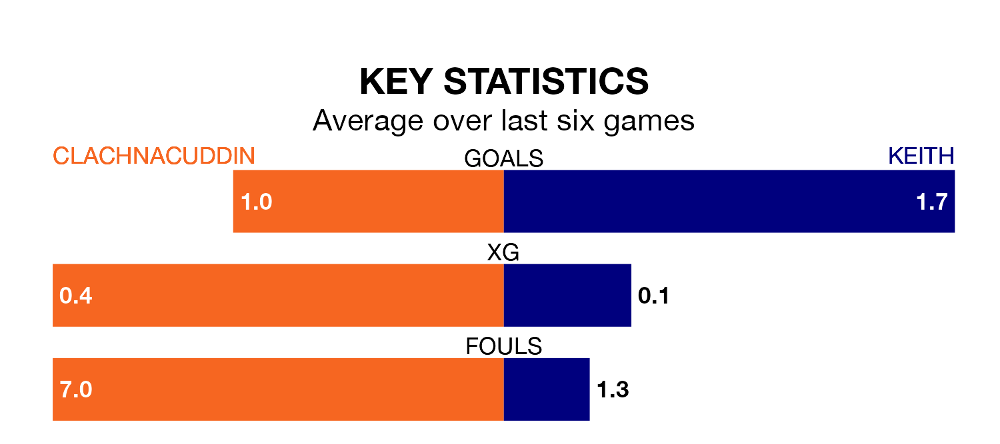

Clachnacuddin host Keith in Saturday's early match at Grant Street Park looking to bounce back from defeat last time out in Highland and Lowland Football Leagues.
Clachnacuddin, who sit zero in the league after 16 games, fell to a 5-2 away defeat to Lossiemouth on November 25.
They face a Keith side who picked up a win in their last match, a 3-2 victory against Deveronvale, and who sit zero in the table.
Clachnacuddin are in terrible form in Highland and Lowland Football Leagues, with no wins and a draw from their last six games.
With two wins and four losses over that period, Keith's form is better – they have taken six points from 18, compared to the hosts' one.
With 16 goals in 16 games so far this season, Clachnacuddin are the league's-15th-lowest scorers with 1.0 goals per game. And they are conceding more than average, letting in 54 goals at a rate of 3.4 per game.
The away team are also below average scorers, with 1.4 goals per game, compared to a league average of 1.7. They have conceded 1.8 goals per game.
In the last five years, Clachnacuddin and Keith have played each other on five occasions. They won two each, and they drew once.
On average, Clachnacuddin scored 2.0 goals and Keith 1.6 in those matches.
Their last meeting was on August 5, when they played out a 1-1 draw.
